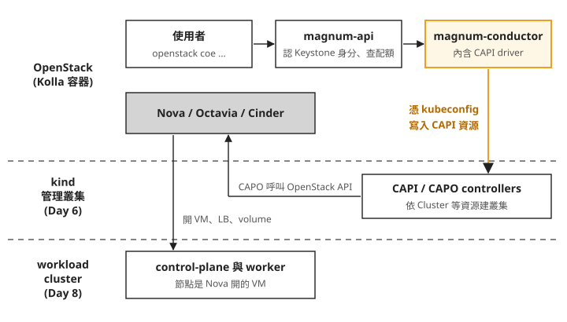
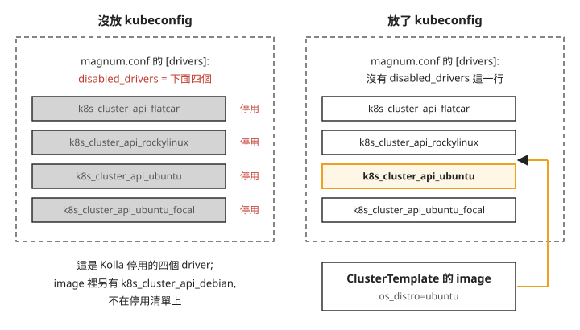
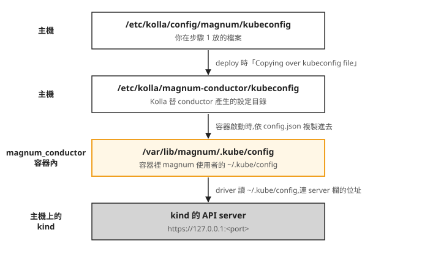

Day 7: 把 Magnum 接上 Cluster API——cluster driver、kubeconfig 開關與 ClusterTemplate¶
Day 6 結束時,主機上多了一座 kind 管理叢集,裡面的 CAPI 和 CAPO 已經會呼叫 OpenStack 開 VM、建負載平衡器,組出一座 Kubernetes cluster。不過要用它,得手寫一疊 CAPI 資源的 YAML,手上還要有 kind 的 kubeconfig(kubectl 用來連線和認證的那份設定檔)。
現在假設這朵雲上有兩個租戶,各自想要一座 Kubernetes cluster。最直接的做法是把 kind 的 kubeconfig 交給他們,但拿到這份檔案的人能看到管理叢集裡的所有 cluster,也能刪掉別人的。這一章要部署 OpenStack 的 Kubernetes 服務 Magnum,讓租戶用自己的 OpenStack 帳號、一行 openstack coe cluster create 申請 cluster,由 Magnum 轉給 Day 6 的管理叢集去建。讀完之後,Magnum 建不出 cluster 時,你能分辨問題出在 CAPI driver 沒啟用、Magnum 連不到管理叢集,還是 ClusterTemplate(管理員預先寫好的 cluster 規格)用的 image 沒標對。
為什麼有了 CAPI 還要 Magnum¶
CAPI 管的是「怎麼把 cluster 建出來」:開節點、裝 Kubernetes、壞了換新、升版。它沒有租戶的概念,誰能操作管理叢集,誰就能動裡面所有的 cluster。如果只有你自己的團隊要用 Kubernetes,直接用 CAPI 就夠了,不需要 Magnum。
要把 Kubernetes 當成雲上的服務開放給多個租戶,還需要另一半:Magnum 用 Keystone 認人,每個請求都帶著租戶自己的 OpenStack 身分;每個 project 有自己的配額,A 看不到 B 的 cluster;租戶只要下 openstack coe 指令,不必懂 CAPI。Magnum 自己不建 cluster,它把請求交給管理叢集。
下面這張圖由上往下,是一個建 cluster 的請求會經過的地方:

照著圖由上往下看:
- 上層全是 OpenStack 的事。 認身分、查配額都在 magnum-api 完成,沒通過的請求不會碰到管理叢集。
- 兩層之間只有一條橘色的線。 Magnum 和管理叢集之間的連結就是一份 kubeconfig。這一章主要的工作就是把這份檔案交給 Magnum,並確認它真的連得上。
- 下面兩層是 Day 6 已經準備好的部分。 CAPO 回頭呼叫 Nova、Octavia、Cinder 開出節點,這一段 Day 8 才會真的跑。
Magnum 怎麼把工作交給管理叢集¶
Magnum 收到建 cluster 的請求後,實際去建的是 cluster driver:Magnum 裡可替換的建置模組,每個 driver 用一種方式把 cluster 建出來。Magnum 早期的 driver 透過 Heat 建 VM,裡面寫死了 node image 的下載網址,這些網址後來都失效了(Sprint 1 就是卡在這裡)。這一章用的是 vexxhost 的 magnum-cluster-api driver,它把 Magnum 的請求轉成 CAPI 資源,寫進管理叢集,之後的事交給 CAPI 和 CAPO。
Kolla Epoxy 的官方 magnum image 已經內建這個 driver,不用自己打包 image,也不用進容器 pip install。driver 在 image 裡,但預設是關著的。Magnum 用設定檔 magnum.conf 裡的 disabled_drivers 列出要停用的 driver,而 Kolla 產生這份設定檔的模板裡有這麼一段:
{% if magnum_kubeconfig_file_path is not defined %}
disabled_drivers = k8s_cluster_api_flatcar,k8s_cluster_api_rockylinux,k8s_cluster_api_ubuntu,k8s_cluster_api_ubuntu_focal
{% endif %}
magnum_kubeconfig_file_path 只有在 /etc/kolla/config/magnum/kubeconfig 這個檔案存在時,Kolla 的 magnum role 才會定義它。也就是說,有沒有放管理叢集的 kubeconfig,決定了 CAPI driver 開不開:

左欄是還沒做這一章時的狀態,右欄是做完之後。image 裡的 driver 其實有五個,還有一個 k8s_cluster_api_debian 不在 Kolla 的停用清單上,圖裡只畫 Kolla 會開關的四個。名稱裡的 ubuntu_focal 是給 Ubuntu 20.04(代號 Focal)image 用的,ubuntu 則是一般的 Ubuntu image。右下那個 os_distro 決定用哪一個 driver,步驟 3 再談;現在只要記得,driver 有沒有啟用,看的是生成出來的 magnum.conf 裡有沒有 disabled_drivers 這一行。
這個設計的好處是不用額外的開關:沒有管理叢集時,啟用 CAPI driver 也沒有用處;一放進 kubeconfig,driver 就有了可以連的地方,也跟著啟用。
步驟 1:開啟 Magnum、放入 kubeconfig¶
這一步要在 globals.yml 加兩行。第一行 enable_magnum 開啟 Magnum。
第二行 enable_cluster_user_trust 跟 trust 有關:trust 是 Keystone 的委託機制,讓一個使用者授權另一個身分代替自己呼叫 OpenStack API。依 Kolla 的 Magnum 指南,開了這個選項,cluster 才能代表建立它的使用者呼叫 OpenStack,cluster 的 auto-scaler(自動增減節點)和 auto-healer(自動替換壞掉的節點)要靠它才能運作。指南也說明這個選項預設關閉的原因:開了之後 cluster 會暴露在 CVE-2016-7404 這個已知弱點的風險下。實驗環境直接開;正式環境要先評估這個風險。
要注意,Day 8 cluster 裡負責建負載平衡器、掛 volume 的元件,用的不是這個 trust,而是 driver 替每座 cluster 另外建的 application credential(一組只給這座 cluster 用的 OpenStack 登入資訊,寫在 cluster 裡的 clouds.yaml)。trust 這個選項 Day 7 用不到,但它屬於 magnum 部署時的設定,現在一起開好,之後就不用再為它重跑 deploy。
下面的區塊分三段:第 1 段是要加進 /etc/kolla/globals.yml 的兩行設定(像 Day 1 步驟 4 那樣附加到檔尾,不是要在終端機執行的指令);第 2 段把 Day 6 kind 的 kubeconfig 複製到 Kolla 讀自訂設定的目錄;第 3 段重跑 deploy:
# 1. globals
enable_magnum: "yes"
enable_cluster_user_trust: "yes"
# 2. 放 management cluster 的 kubeconfig(Day 6 kind 的 ~/.kube/config)
sudo mkdir -p /etc/kolla/config/magnum
sudo cp ~/.kube/config /etc/kolla/config/magnum/kubeconfig
sudo chown azureuser:azureuser /etc/kolla/config/magnum/kubeconfig
# 3. deploy(magnum 建 DB/keystone/trustee、掛 kubeconfig、省略 disabled_drivers)
kolla-ansible deploy -i ~/all-in-one --tags magnum,loadbalancer,horizon
有兩個地方要留意:
chown那一行不能省。sudo cp產生的檔案屬於 root,權限0600;kolla-ansible 卻是用你自己的帳號讀這個檔案,讀不到就會在 deploy 中途失敗。azureuser是 Day 0 建 VM 時的使用者,如果你用別的帳號執行 kolla-ansible,換成那個帳號。漏了的症狀見疑難排解:Permission denied。- deploy 帶了三個 tag。
magnum建資料庫、Keystone 帳號、trustee 網域(Magnum 在 Keystone 裡另建的網域,trust 用的帳號放在這裡;區塊註解裡的 trustee 指的就是它),並把 kubeconfig 放進容器;horizon讓網頁儀表板多出 Container Infra 選單;loadbalancer管的是 haproxy 的設定,Day 1 已經關掉 haproxy,單機上它沒有東西要改。跟 Day 1 一樣,deploy 是冪等的,失敗修好後直接重跑。
步驟 2:確認 driver 啟用、Magnum 連得到管理叢集¶
Magnum 由兩個服務組成:magnum-api 接收請求、做認證和配額檢查;magnum-conductor 做實際的工作,CAPI driver 就在它裡面執行。所以要連管理叢集的是 conductor。你放的那份 kubeconfig 走了下面這條路,才到 conductor 手上:

照著圖由上往下看,有兩點值得注意:
- 檔案最後落在
/var/lib/magnum/.kube/config。 容器裡 magnum 使用者的家目錄就是/var/lib/magnum,所以這個位置正好是 driver 預設會去讀的~/.kube/config,不用另外設定路徑。 - 最後一格的位址是
127.0.0.1。 kind 產生的 kubeconfig,server欄寫的是https://127.0.0.1:加上一個 kind 建 cluster 時挑的 port(打開~/.kube/config就看得到)。從容器裡連127.0.0.1之所以會連到主機上的 kind,是因為 Day 1 說過 Kolla 的容器都走 host network,容器的127.0.0.1就是主機本身。如果你用的部署工具沒有讓 magnum 走 host network,就要改用 kind 容器的 Docker 網路 IP,或用kind get kubeconfig --internal產生的版本。
下面依序確認三件事:生成的 magnum.conf 沒有 disabled_drivers;conductor 容器連得到 kind;conductor 服務在 Magnum 裡登記為運作中。第二項用的 pykube 是 driver 呼叫 Kubernetes API 時用的 Python 套件,這行指令用跟 driver 相同的方式讀 ~/.kube/config、列出管理叢集的節點。註解裡的 → 是預期的結果:
source /etc/kolla/admin-openrc.sh
# disabled_drivers 應「不存在」= driver 啟用
sudo grep -c '^disabled_drivers' /etc/kolla/magnum-conductor/magnum.conf # → 0
# conductor 用 driver 的方式實連 kind
sudo docker exec magnum_conductor python3 -c \
"import pykube; a=pykube.HTTPClient(pykube.KubeConfig.from_env()); print([n.name for n in pykube.Node.objects(a)])"
# → ['capi-mgmt-control-plane']
pip install python-magnumclient
openstack coe service list # magnum-conductor state=up
另外,容器內的 /var/lib/magnum/.kube/config 應該存在,擁有者是 magnum:magnum、權限 600,這是 Kolla 為 conductor 容器設定的複製規則決定的。本課當時確認過這個結果,但沒有留下所用的指令;想自己看的話,用你習慣的方式進 magnum_conductor 容器列出這個檔案即可。
這三項各自對應開場說的一種失敗:
grep -c印出1:driver 沒啟用。回頭確認/etc/kolla/config/magnum/kubeconfig存在,再重跑 deploy。- pykube 那行報連線錯誤:conductor 連不到管理叢集。先確認 kind 還在跑、kubeconfig 裡的 port 跟現在的 kind 一致。印出
['capi-mgmt-control-plane'](Day 6 那座 kind 唯一的節點)才算連通。 openstack coe service list裡 magnum-conductor 不是up:conductor 本身沒起來,看magnum_conductor容器的 log。
openstack coe 這組指令不在 Day 1 裝的 python-openstackclient 裡,要另外裝 python-magnumclient,跟 Day 4、Day 5 補裝 Octavia、Heat 的 client 是同一回事。
步驟 3:準備 node image、flavor 和 ClusterTemplate¶
租戶建 cluster 時不會每次都指定一長串參數,而是挑一個 ClusterTemplate:一份預先寫好的 cluster 規格,裡面記著節點用哪個 image、哪個 flavor、接哪個對外網路、Kubernetes 版本等。管理員先建好 template,租戶建 cluster 時指定 template,再補上節點數量就好。
template 裡最重要的一項是 node image,因為它同時決定 Magnum 用哪個 driver。Magnum 看的是 image 上的 os_distro 屬性(property):image 標了 os_distro=ubuntu,就選 k8s_cluster_api_ubuntu,也就是前面那張比較圖右欄被選中的那一個。每個 driver 都宣告了自己對應的作業系統名稱,os_distro 的值要完全對上:ubuntu、ubuntu-focal、debian、flatcar、rockylinux(注意 ubuntu-focal 用的是連字號,跟 driver 名稱裡的底線不同)。沒有標 os_distro,Magnum 找不到對應的 driver。
node image 來自 vexxhost 的 capo-image-elements 專案。每個 image 是一份預先裝好 kubelet、kubeadm、containerd 的 Ubuntu 24.04,CAPO 開出 VM 之後,節點用 kubeadm 加入 cluster。這個專案每一版會同時提供幾個 Kubernetes 版本的 image,本課用 2026.05-7 版裡的 v1.34.8。driver(Kolla Epoxy image 內建的版本)、Day 6 裝的 CAPI v1.13.2 和 CAPO v0.14.4、node image 這三者要彼此相容;本課用的是 vexxhost 測過的組合。之後要換其中任何一項的版本,先查 driver 測過哪個組合,不要只升級一邊。
flavor 的部分,Day 2 只建了 m1.tiny 和 m1.small,放不下 Kubernetes 節點,所以這裡另外建一個 m1.medium。名稱沿用 vexxhost 入門文件範例裡的 flavor 名稱,2 vCPU、4 GB 記憶體、40 GB 磁碟是本課自己的設定。
下面的區塊依序下載並上傳 image、建 flavor、建 template:
# image(os_distro=ubuntu 是 driver 選型關鍵)
curl -fLO https://github.com/vexxhost/capo-image-elements/releases/download/2026.05-7/ubuntu-24.04-v1.34.8.qcow2
openstack image create ubuntu-24.04-v1.34.8 --disk-format qcow2 --container-format bare --public \
--file ubuntu-24.04-v1.34.8.qcow2 --property os_distro=ubuntu --property os_version=24.04
# flavor(k8s 節點,原本只有 m1.tiny/small)
openstack flavor create m1.medium --vcpus 2 --ram 4096 --disk 40
# ClusterTemplate(master-lb-enabled 必需;kube_tag 對應 image 版本)
openstack coe cluster template create k8s-v1.34.8 \
--image ubuntu-24.04-v1.34.8 --external-network ext-net --dns-nameserver 8.8.8.8 \
--master-lb-enabled --master-flavor m1.medium --flavor m1.medium \
--network-driver calico --docker-storage-driver overlay2 \
--coe kubernetes --label kube_tag=v1.34.8
template 的參數裡,有三個跟這朵雲的其他部分接在一起:
--external-network ext-net:Day 2 建的對外網路,節點和 API 的浮動 IP 從這裡來。--master-lb-enabled:在 control-plane 前面放一個 Octavia 負載平衡器(Day 4 的服務),cluster 的 Kubernetes API 透過它對外提供。vexxhost 入門文件的範例有開這一項,本課照做。--label kube_tag=v1.34.8:Kubernetes 版本,要跟 image 名稱裡的版本一致。
其他幾個參數:--network-driver calico 指定 cluster 裡 pod 之間的網路用 Calico;--docker-storage-driver overlay2 是節點上容器檔案系統的格式選項,入門文件的範例有帶,本課照做;上傳 image 時的 os_version 只是標記作業系統版本,選 driver 時看的是 os_distro。
這份 template 是用 admin 身分建的,沒有加 --public,所以只有 admin 這個 project 看得到。要讓其他租戶也能挑這份 template,建立時加上 --public,這個選項需要 admin 權限。
建好之後,openstack image show ubuntu-24.04-v1.34.8 的狀態應該是 active,properties 裡有 os_distro='ubuntu';openstack coe cluster template show k8s-v1.34.8 的 cluster_distro 欄應該是 ubuntu,這表示 Magnum 已經從 image 認出要用 ubuntu 那個 driver。
template create 成功不代表 Day 8 一定開得出 VM:Magnum 建 template 時只檢查 flavor 存不存在,不比對 flavor 的磁碟和 image 的大小,這要到 Nova 實際開節點時才檢查,見疑難排解:flavor 磁碟比 image 小。
疑難排解¶
deploy 停在 "Copying over kubeconfig file",Permission denied¶
症狀:deploy failed=1,錯誤是 Permission denied: /etc/kolla/config/magnum/kubeconfig。
原因:sudo cp 產生的檔案是 root:root 0600,而 kolla-ansible 用執行它的帳號從本機讀這個檔案。修法見步驟 1 的 chown(權限維持 600 即可),改完重跑 deploy。放進 /etc/kolla/config/ 的其他自訂檔也一樣,要讓執行 kolla-ansible 的帳號讀得到。
找不到 m1.medium,或 flavor 磁碟比 image 小¶
原因:Day 2 只建了 m1.tiny 和 m1.small,m1.medium 要照步驟 3 自己建。另外,建 template 時,Magnum 只檢查 flavor 存不存在(不存在時 template create 會失敗),不比對 flavor 磁碟和 image 的大小,所以 flavor 偏小 template 照樣建得成功,要到 Day 8 Nova 開節點時才失敗。
修法:建 flavor 時,--disk 要不小於 node image 的虛擬大小(image 展開後的磁碟大小,不是 qcow2 檔案本身的大小)。
想一想¶
- 一位同事照著做完這一章,
grep -c '^disabled_drivers'印出1,但他很確定已經把 kubeconfig 放進去了。你會請他先檢查什麼? - VM 重開機後,kind 的管理叢集被重建了。Magnum 這邊還能建 cluster 嗎?步驟 2 的三項確認裡,哪一項會先失敗,要怎麼修?
- 另一位同事上傳了自己用 Rocky Linux 做的 node image,沒有加任何
--property,建 template 時就失敗了。少了什麼?該補什麼、值要填什麼,補上之後會用哪個 driver?
小結¶
Magnum 是 OpenStack 上給租戶用的 Kubernetes 入口:magnum-api 負責認身分、查配額,magnum-conductor 裡的 CAPI driver 把請求轉成 CAPI 資源,寫進 Day 6 的管理叢集。在 Kolla 上接起這兩層,只需要在 /etc/kolla/config/magnum/ 放一份管理叢集的 kubeconfig:有這份檔案,Kolla 就不再產生 disabled_drivers,driver 也跟著啟用;至於用哪個 driver,由 ClusterTemplate 的 image 上的 os_distro 決定。之後 Magnum 建不出 cluster 時,照這個順序查:magnum.conf 有沒有 disabled_drivers、conductor 連不連得到管理叢集、image 有沒有標 os_distro。
延伸閱讀¶
想再深入,可以從這幾份開始:
- Kolla-Ansible 的 Magnum 指南 —— Kolla 部署 Magnum 的官方說明,包括本章開啟的
enable_cluster_user_trust的用途與預設值。 - Magnum 官方 User Guide —— ClusterTemplate 每個參數的定義,以及 image 的
os_distro怎麼決定 driver。 - magnum-cluster-api 入門文件(vexxhost) —— 本章用的 driver 的官方文件:node image 怎麼上傳、template 怎麼建,本章
m1.medium這個 flavor 名稱也是沿用這裡的範例。 - The Cluster API Book —— CAPI 的官方文件,Day 6 見過的 Cluster、Machine、MachineDeployment 等資源的完整說明。
- The Turtle-Powered Shark(StackHPC) —— StackHPC 說明 Magnum 為什麼改用 Cluster API 取代 Heat 建 cluster。文中介紹的是他們自己的 Helm 版 driver,跟本章用的 vexxhost driver 是兩個實作,但背後的理由相同。
下一步¶
template 建好了,但還沒有任何 cluster。Day 8 用 openstack coe cluster create 實際開一座 workload cluster,看請求怎麼依序經過 Magnum、管理叢集、Nova 和 Octavia,並確認節點 Ready、LoadBalancer 拿得到 Octavia 負載平衡器、PVC 綁得上 Cinder volume。Day 8 會以這份 template 為基礎,另外建一份加上實驗環境專用 label 的 template。
開始 Day 8 之前,如果 VM 重開過機,先確認 kind 管理叢集已經恢復(見 Day 6 的「VM 重開機後 management cluster 沒有恢復」),而且 /etc/kolla/config/magnum/kubeconfig 裡的 port 跟現在的 kind 一致。kind 重建後 port 會換,這時要把新的 kubeconfig 複製過去,再跑一次 kolla-ansible deploy --tags magnum。